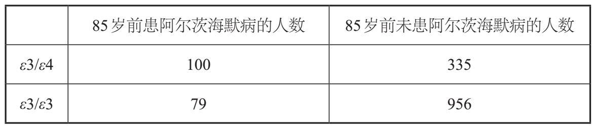
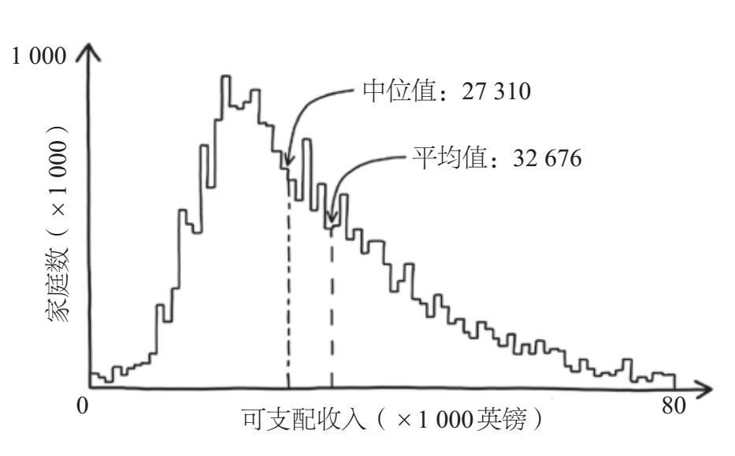
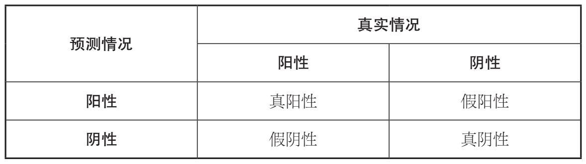
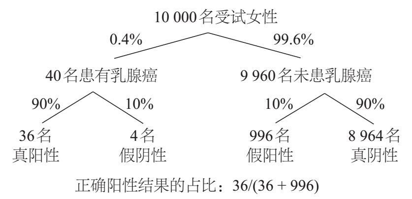
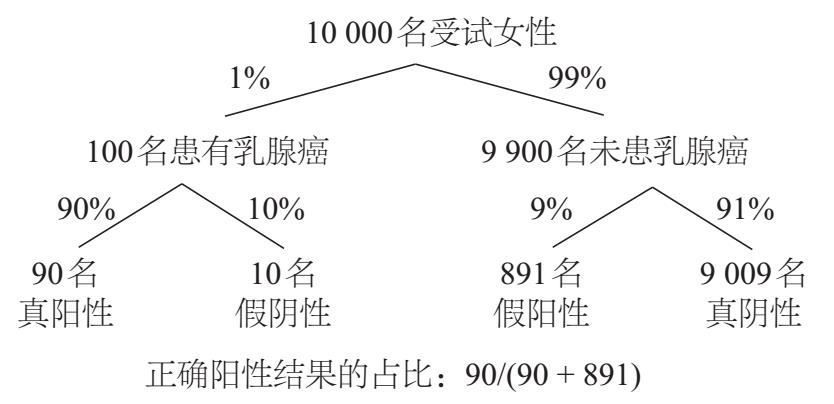
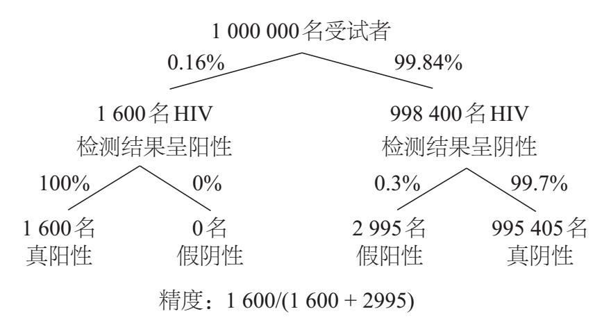
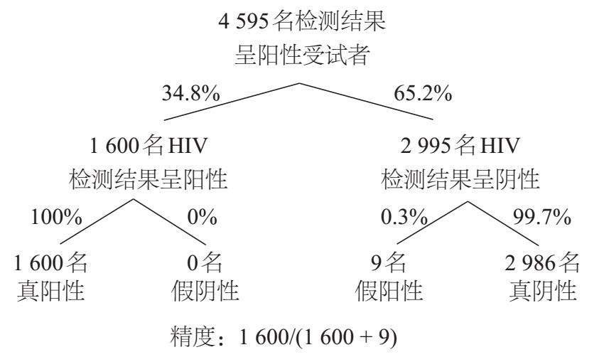

看到收件箱中的体检报告，我有点儿紧张，肾上腺素激增。我的胃开始痉挛，手指有些麻木。我不自觉地调整起呼吸，甚至能感觉到耳后脉搏的跳动。我打开邮件，浏览完正文，便立即点击了“查看您的体检报告”链接。浏览器窗口打开了，我登录并点击进入“遗传健康风险”部分。我的目光逐一扫过检查项，看到“帕金森病：未见异常”“BRCA1/BRCA2（乳腺癌1号基因/乳腺癌2号基因）：未见异常”“与年龄相关的黄斑变性：未见异常”时，我的内心稍感宽慰。看过更多检查结果后，我的焦虑感慢慢消退。然而，当我滑动鼠标来到检查报告的最下面时，我注意到有这样一项：“迟发性阿尔茨海默病：风险增加”。
当我写作本书时，我认为研究个人基因检测背后的数学原理会很有意思。所以我与DNA鉴定公司23andMe签约，这家公司可能是最知名的个人基因检测公司。如何更好地理解结果而不是自己瞎猜？在我花了不少钱后，他们给我送来了一根可收集两毫升唾液的细管，装好唾液后我把管封好，再寄回给他们。23andMe公司承诺可提供90多份关于我的特征、健康状况甚至是我的祖先的报告。在接下来的几个月里，我早已把这件事忘了，因为我从来没有真正指望一次测试能告诉我这么多信息。然而，当我收到电子邮件时，还是觉得有点儿震撼，我只需点击几下鼠标就能全面了解自己未来的健康状况。我坐在电脑屏幕前，面对着看似非常严重的健康问题。
为了更好地了解“风险增加”意味着什么，我下载了关于阿尔茨海默病患病风险的完整的14页报告。在对阿尔茨海默病进行了基本了解后，我希望了解更加详细的信息。报告上的第一句话说：“阿尔茨海默病的症状是记忆丧失、认知能力下降和性格改变。”但这并没有缓解我的焦虑。随着我了解得越来越多，我发现23andMe公司在我的载脂蛋白E（APOE）基因的其中一个拷贝（共两个）中检测到了ε4变异体。报告中的第一个定量信息告诉我：“平均而言，带有这种变异体的欧洲男性在75岁时有4%~7%的概率患上迟发性阿尔茨海默病，在85岁时患病概率增加到20%~23%。”
尽管这些数字以抽象的方式传递了一些确切的信息，但我发现它们不太好理解。读完这份报告后，我首先想知道，对于这一困境，我能做些什么？其次，就平均程度而言，我的情况有多糟？最后，对于23andMe公司为我提供的数据，有多少是真实的？当我继续向下看体检报告时，接下来的一个条目回答了我的第一个问题：“目前还没有已知的预防或治疗阿尔茨海默病的方法。”为了回答剩下的问题，我必须深入研究这份报告。我迫切地想找到这项遗传学测试的数学解释，因为它与我息息相关。
随着医学逐渐成为一门量化学科，数学公式通常为关键决策提供了坚实的基础，无论是关于某种治疗方法的适用性，还是我们对生活方式的个性化选择。在本章中，我们将探索这些公式，确定它们是否具有坚实的科学基础，以及这些公式背后是否有过时的观念需要丢弃。讽刺的是，我们将利用几百年前的数学原理来构建更精确的替代模型。
随着诊断技术的进步，我们得到了越来越多的医学评价。本章将研究假阳性结果对最普遍的医疗筛查程序的惊人影响，你将了解到医学测试为何既准确又模糊。我们将陷入怀孕测试等工具带来的道德困境，这些工具在不同的诊断环境中既能给出假阳性结果，也能给出假阴性结果，我们必须学会如何合理运用这些不准确的结果。
全基因组测序、可穿戴技术和数据科学的进步，使我们进入了个人化医疗时代的初级阶段。我们正在这个全新的医疗时代迈出尝试性的第一步，而我将重新解释自己的DNA检测结果，了解我的真实患病风险，并确定目前用于解释个性化基因检测的数学方法是否经得起论证和推敲。
2007年，以人类的23对染色体命名的23andMe公司，成为全球第一家提供个人DNA检测服务的公司。第二年，在谷歌的400万美元投资的推动下，他们研发出了一项唾液测试，可以估算一个人患酒精不耐受、心房颤动等近100种疾病的可能性。他们推出的特征列表非常全面，彰显了变革行业的力量，《时代周刊》授予该测试“年度发明奖”。
但对23andMe公司而言，美好的时光并没有持续多久。2010年，美国食品药品监督管理局（FDA）通知所有个人基因检测公司，他们的测试属于医疗设备范畴，需要得到美国联邦政府的批准。但直到2013年，23andMe公司仍然没有获得批准，于是FDA命令他们停止提供疾病风险预测服务，直到他们的测试的准确性得到验证。23andMe公司的客户为此发起集体诉讼，声称他们受到了该公司在可提供服务方面的误导。2014年12月，在此事件发展到高潮时，23andMe公司在英国推出了与健康相关的基因检测服务。鉴于之前的这些争议，我也想知道他们为我做的DNA检测的可靠性。
33岁的网络开发员马特·芬德刊登在《纽约时报》上的经历，也没有消除我的担忧。作为一位极客和“疑病症”这个日益庞大的组织成员之一，芬德是23andMe公司的理想客户。23andMe公司在收到他的个人数据并经过第三方检测机构的解释后，告诉芬德他的PSEN1基因变异呈阳性。PSEN1是早发性阿尔茨海默病的一个指标，具有“完全外显性”，这意味着每个有PSEN1突变的人都会患上这种疾病——没有例外，也没有但是。不出所料，芬德对他将会失去抽象思考能力和解决问题的能力以及无法形成相关记忆感到震惊。该诊断使他的高质量预期寿命至少减少了30年。
基因突变的阴影在他的脑海里挥之不去，他特别渴望他人的安慰。由于芬德没有阿尔茨海默病的家族病史，所以他成功地说服了遗传学家再给他做一次检测。这一次他给Ancestry.com基因检测公司发送了自己的唾液样本，5周后检测结果出来了：PSEN1基因变异呈阴性。芬德松了一口气，但他比以前更困惑了。他最终说服医生为他进行临床评估，并证实了Ancestry.com的阴性检测结果。
23andMe和Ancestry.com使用的测序技术的错误率仅为0.1%，这看似非常可靠。但值得注意的是，当测试近百万个遗传变异时，即使错误率如此低，也会出现大约1 000个碱基对的错误。两家独立公司的结果之间可能存在分歧，这令人担忧，但并不令人惊讶。也许更令人担忧的是，检测结果缺乏理论的支持。要求在家进行基因图谱分析的测试者在处理他们的结果时也几乎与医疗系统完全隔离。
由于23andMe公司锐减了基因检测范围，它逐渐获得了FDA的批准，于2017年在美国重新营业，他们的家庭DNA检测试剂盒成为亚马逊当年“黑色星期五”最畅销的产品之一。尽管我对此存疑，但我还是订购了一个试剂盒并将我的唾液样本送去检测。
人体中的每个细胞都含有一个细胞核，其中包含DNA的拷贝，即“生命之书”。我们的23对染色体传承着这些长长的纽结状核苷酸，每对染色体中有一条来自父本，另一条来自母本。这两条染色体携带的基因拷贝相同，其序列相似，但不一定完全一致。比如，23andMe公司测试的就是与阿尔茨海默病相关的APOE基因的两个主要变异体：ε3和ε4。其中，ε4变异与迟发性阿尔茨海默病的患病风险增加有关。因为有两条染色体，所以你可能有一份ε4和一份ε3的拷贝，或者两份ε4拷贝（没有ε3的拷贝），或没有ε4的拷贝（两份ε3的拷贝）。拷贝数量被称为你的基因型。两份ε3拷贝是最常见的基因型，是判断患阿尔茨海默病可能性的基线。你拥有的ε4变异体的拷贝越多，患阿尔茨海默病的风险就越高。
但是，多高才算高风险呢？由于23andMe公司发现我有一个特定的基因型，所以我的发病风险有多大呢？为了让他们对我做出的风险预测更可信，我需要确保他们的数学分析建立在坚实的基础之上，而不是草率得出结论。
*
预测阿尔茨海默病发病风险的最佳方法是选择可代表一般人群的大量个体，确定他们的基因型，然后定期检查并统计患上阿尔茨海默病的人数。利用这些代表性数据，可以很容易地比较出拥有特定基因型的人群患上阿尔茨海默病的风险与一般人群的发病风险的差异，这就是所谓的“相对风险”。通常，由于需要大量样本的参与（特别是对于罕见疾病），这种纵向研究成本高昂，而且需要通过长时间的跟踪观察才能得到可靠的结果。
在学术界更常见但不太有效的一种替代方案是病例对照实验，选择一些已患上阿尔茨海默病的个体，以及一些“控制变量”，即具有相似背景但未患病的个体。（我们将在第3章看到为什么精细地控制个体背景非常重要。）在纵向研究中，参与者的选择与其疾病状态无关，然而在病例对照实验中，更倾向于选择患病者。因此，我们无法估算大规模人群中的疾病发病率，这意味着我们对该疾病的相对风险进行的预测是有偏差的。然而，这些实验确实可以让我们计算出“优势比”的值，这类量值不需要你预先知道人群中的总发病率是多少。
如果你去过赛狗场或赛马场，你可能记得某只动物赢得比赛的概率通常以赔率表示。在某场比赛中，一只不被看好的动物可能的赔率是5∶1。这意味着，如果同一场比赛共进行6次，那么这只动物很有可能输掉5次，而只赢1次。也就是说，它获胜的概率是1/6。赔率的一般定义方式是，事件的未发生概率与事件的发生概率之比（在这个例子里，赔率为5/6∶1/6，或者更简单地记为5∶1）。相反，比赛的种子选手的胜率可能是2∶1。在体育博彩中，总是习惯把较大的数字放在前面，所以我们需要区分胜率和赔率。与赔率相反，胜率表示的是事件发生概率与未发生概率之比。如果胜率为2∶1，那么在三场比赛中，种子选手将赢两场而输一场。种子选手的获胜概率是2∶3或2/3，输掉的概率是1/3，所以胜率是2/3∶1/3，或者简单记为2∶1。
当你听到评论员或簿记员说出种子选手的胜率时，这通常只会出现在有少量马匹参加的比赛中。但其实这是句废话。任何有胜算的马都是种子选手，因为这匹马在任何比赛中获胜的概率都大于它输掉比赛的概率。在有大量马匹参与的比赛中，一匹马赢得的比赛比输掉的多就不太常见了。比如，在英国最著名的国家越野障碍赛马中，共有40匹马参加。即使是2018年的获胜者和2019年比赛的种子选手（并最终获胜）虎皮卷，其赔率也为4∶1。因为除非另有明确规定，否则大部分赛马都不可能赢得大部分比赛，所以在这些比赛中用的通常是赔率。
在医疗场景中，情况恰恰相反。概率通常表示胜率，即事件发生的概率和不发生的概率之比。而且，由于我们通常谈论的是罕见疾病（在总人口中的流行率低于50%），所以通常把较小的数字放在前面。
为了解释如何计算医学上的概率及其比值，我们可以考虑一个假想的病例对照研究，研究单个ε4变异体（存在于我的DNA中）对85岁前的阿尔茨海默病发病率的影响。表2–1表示在85岁前患阿尔茨海默病的概率，对于与我一样具有相同的一份ε4变异体的人来说，患有该疾病的人数（100）除以未患病的人数（335）为100∶335，或表示为分数100/335。按照相同的逻辑填写表格的第二行，对于有两份ε3变异体的人来说，在85岁前发病的可能性为79∶956或79/956。概率比是指拥有某种基因型（比如一份ε4的拷贝和一份ε3的拷贝）发病的概率与拥有最常见基因型（两份ε3的拷贝）发病的概率之比。对于表2–1中给出的假设数字，优势比为100/335除以79/956，结果为3.61。重要的一点是，我们并不需要知道整个人群的发病率，就可以很容易地通过病例对照研究算出概率比。

虽然优势比本身并不能揭示相对风险（ε3/ε4基因型的发病风险与ε3/ε3基因型的发病风险的比值），但我们可以将之与患病人群及已知的基因型频率相结合，得出某基因型的发病概率。然而，这种计算并不像看上去那么简单。事实上，可以有不止一种算法。我尝试使用与23andMe公司相同的方法，直接从报告或他们引用的论文中获取数据，看能否得出与我的遗传报告相同的迟发性阿尔茨海默病的患病风险。[1]（如果你感兴趣，我可以告诉你我是用包含3个未知条件概率的3个耦合方程，并用一个非线性求解器计算出疾病的发生概率，我平时喜欢自己动手计算。）我发现，我得到的数字和他们给出的数字之间存在微小的差异，但这个差异可能很重要。我的计算似乎表明，我应该在一定程度上用怀疑的目光审视23andMe公司给出的检测结果的精度。
2014年的一项研究调查了三家领先的个人基因检测公司（包括23andMe公司）的风险计算方法，从该研究中我的结论得到了某种程度上的印证。[2]他们发现，总人口风险、基因型频率和使用的数学公式的差异，共同导致了不同公司的预测风险之间的显著不同。当人们将个人风险分为升高、降低或未改变等类别时，差异变得更加明显。该研究还发现，在所有接受前列腺癌检测的人中，有65%得到了三家公司中的至少两家截然相反的风险类别（升高或降低）结果。在近2/3的案例中，一家公司可能告诉客户他们是健康的，而另一家公司却告诉客户他们患前列腺癌的风险显著增加。
若不考虑遗传测试本身错误的可能性，我得到了我想问的第三个问题的答案：使用不同的数学方法可能会得到不同的结果，这意味着个人基因检测报告中列出的患病风险在某种程度上应该受到质疑。
个人DNA检测绝不是个人掌控自身健康状况的唯一工具。手机应用程序也可以监测心率或估算有氧运动水平，在家就能初步诊断过敏、血压问题、甲状腺异常、艾滋病等几乎任何疾病。但在手机应用程序出现之前，最便宜、最容易计算又没什么技术含量的个人诊断工具，大概就是身体质量指数（BMI）了。个人的BMI可以通过体重（单位为千克）除以身高（单位为米）的平方得到。
出于记录和诊断的目的，BMI低于18.5的人都被归类为“体重过轻”，18.5~24.5属于“正常体重”，24.5~30属于“超重”，BMI高于30即被定义为肥胖。尽管很难准确估算，但普遍认为肥胖可能导致了美国大约23%的死亡率。世界上的其他地方没有这么极端，但这一趋势是普遍存在的。在欧洲，肥胖致死的病例数量仅次于吸烟。几乎每个国家的肥胖率都在上升，无论是成年人还是儿童，肥胖的流行程度在过去30年中增长了一倍。BMI属于肥胖范围的人更有可能患上危及生命的疾病，如2型糖尿病、中风、冠心病和某些类型的癌症，出现抑郁等心理问题的风险也较高。如今，世界上有越来越多的人死于超重，而不是体重不足。
鉴于肥胖或超重带来的健康问题，你可能会认为用于预测这些病症的指标（比如BMI）具有强大的理论和实验基础。然而，事实并非如此。事实上，BMI最早是由比利时人阿道夫·凯特勒在1835年提出来的，他是著名的天文学家、统计学家、社会学家和数学家，但值得注意的是，他并不是医生。[3]通过使用一些明显不可靠的数学方法，凯特勒得出结论：“成年人的体重与身高的平方成一定比例。”不过，凯特勒是从人口的平均数据中得出这一结论的，没有明确表示它在个体层面同样适用。凯特勒也没有想到，以他的名字命名的“凯特勒指数”被用于估测一个人的体重是偏高还是偏低，甚至是健康状况。直到1972年，这一方法才流行起来。为了应对前所未有的肥胖问题，美国生理学家安塞尔·基斯（他后来将饱和脂肪与心血管疾病联系了起来）进行了一项研究，旨在找到超重的最佳衡量指标。[4]和凯特勒一样，他也提出了质量与高度的平方比值，并认为该指标可以很好地识别出肥胖人群。
从理论上讲，超重者相较同等身高的人体重更高，体重指数也更高，体重过轻者的BMI则更低。基斯的BMI公式因简单而广受欢迎。随着我们变得越来越胖，以及越来越多的健康问题与肥胖显著相关，流行病学家开始使用BMI作为跟踪与超重相关的风险因素的工具。20世纪80年代，世界卫生组织、英国国家医疗服务体系（NHS）和美国国立卫生研究院（NIH）都正式把BMI作为定义肥胖的唯一指标。大西洋两岸的保险公司现在经常使用BMI来确定保费，甚至据此决定是否接受个人投保。
虽然体重更高的人通常具有更高的BMI，但这未必适用于所有人。BMI的主要问题在于，它无法区分肌肉和脂肪，这一点十分关键，因为体脂是预测心脏代谢风险的有效指标，但BMI不是。如果我们基于高体脂率定义肥胖，那么15%~35%被BMI定义为非肥胖的男性将被重新定义为肥胖。[5]比如，肌肉含量低而身体脂肪含量高且被BMI指标定义为体重正常的“肥胖的瘦子”就属于“体重正常的胖人”类别。最近一项针对40 000人的跨人群研究发现，30%的BMI在正常范围内的人的心脏代谢状况不良。肥胖危机可能比我们基于BMI得出的数据更严重。然而事实证明，BMI也高估了肥胖人数。同一项研究发现，有超过一半被BMI定义为超重的人和超过1/4被BMI定义为肥胖的人，他们的代谢水平都是正常的。
这些不正确的分类影响了我们测量和记录与肥胖相关数据的准确性。也许更令人担忧的是，根据BMI把健康个体诊断为超重或肥胖，也会对他们的心理健康产生不利影响。[6]记者兼作家丽贝卡·里德从十几岁起就开始与饮食失调做斗争，她在生物课上学到的测量BMI的方法成为这一斗争的起点。尽管丽贝卡此前对她的身体状况感到很满意，但测量BMI后她被划入了超重人群。于是，她开始严格控制饮食，并锻炼身体，在短短几周内就减重10磅[7]。有段时间，她试图将每天的热量摄入控制在400卡路里以内，还因此在卧室里晕过去一次。她不节食时则会通过暴饮暴食来惩罚自己，让自己生病。BMI指标没有温和地提醒丽贝卡应该多做运动，只是粗暴地把她归入超重人群，这对于丽贝卡的自尊心无疑是一记重击。讽刺的是，无论体形如何，有饮食失调问题的人通常在BMI达到19后就会被认为“恢复正常”或者是“健康”人群。但是，当一些饮食失调患者认识到自己有问题并想寻求帮助的时候，他们可能会因为BMI属于健康范围而得不到必要的帮助。
BMI显然不是一个准确的健康状况指标。相反，直接测量与心脏代谢密切相关的体脂率则更有用。要做到这一点，我们需要借用2 000年前源于西西里岛上的古城叙拉古的观点。
*
公元前250年左右，古代著名数学家阿基米德曾受叙拉古国王耶罗二世的委托去解决一个有争议性的问题。国王让一名工匠为他打造了一顶纯金皇冠，在皇冠制成后，国王听到了一些关于工匠偷工减料的传闻，他担心工匠用合金或其他更便宜的金属糊弄他，于是国王要求阿基米德在不损坏皇冠的前提下弄清楚皇冠到底是不是纯金打造的。
这位杰出的数学家意识到，要解决这个问题，就必须计算出皇冠的密度。如果皇冠的密度低于纯金，他就知道工匠作弊了。截取规则形状的金块，计算出它的体积，然后称重，这样可以很容易地计算出纯金的密度——用质量除以体积。如果他也可以这样计算皇冠的密度，他就能做出比较了。称出皇冠的重量很容易，但由于它的形状不规则，计算它的体积就比较麻烦了。这个问题困扰了阿基米德好一阵子，直到有一天他注意到当进入装满水的浴缸时会有水溢出。浴缸里的他突然意识到，从装满水的浴缸中溢出的水的体积正好等于浸没在水中的形状不规则的物体的体积。就这样，他找到了测量皇冠体积的方法，进而可以确定皇冠的密度。维特鲁威记录到，阿基米德为他的发现感到非常高兴，他直接从浴缸里跳了出来，赤身裸体地跑到街上，高喊着：“尤里卡！”（“我找到了！”）这就是最初的尤里卡时刻。
即便到了今天，阿基米德的固体排水法仍适用于计算形状不规则的物体的体积。如果你正打算开启一段健康之旅，你就可以用它计算由形状不规则的水果和蔬菜混合而成的沙拉的体积。或者，通过往空的密封袋中吹入空气并将其浸没在水中，我们就可以估算健身之后的肺活量。
不幸的是，尽管故事中描述了固体排水法非常实用，但它不太可能是阿基米德解决问题的方式。阿基米德对皇冠浸没在水中后溢出水量的测量未必是准确的。相反，阿基米德更有可能利用的是流体静力学的相关原理，这种原理后来被称为阿基米德原理。
根据该原理，放置在流体（液体或气体）中的物体受到的浮力，等于相同体积的流体的重量。也就是说，浸入的物体越大，其排挤出的流体就越多，它受到的向上的浮力也越大。这就解释了为什么只要船舶和货物的重量小于它们所取代的水的重量，超大型货船就能漂浮在水面上。该原理也与密度（物体的质量除以其体积）密切相关，密度大于水的物体的重量大于它所取代的水的重量，浮力不足以承载物体的重量，因此物体就会下沉。
根据这个原理，阿基米德需要做的就是在天平的一端放上皇冠，在另一端放上相同质量的纯金。在空气中，天平两边将保持平衡。然而，当这个装置被浸没在水中时，假皇冠（其体积大于相同质量的黄金）会受到更大的浮力，这一端的托盘将会上升。
我们利用阿基米德原理可以准确计算体脂率。先在正常条件下为受试者称重，然后让受试者在淹没于水中的椅子上再次称重，椅子和秤相连。接下来，利用净重和水下重量的差值算出作用于人体的浮力，由于水的密度是已知的，因此可以确定人体的体积。最后，根据体积并结合人体脂肪和肌肉等成分的密度数据来估算体脂率，做出更准确的健康风险评估。
BMI只是现代医学实践中常用的一种数学工具，其他工具还包括用于计算药物剂量的简单分数、用于计算机断层成像扫描图像重建的复杂算法。在英国的医疗保健领域，有一个公式在其争议性、重要性和广泛影响方面可能远大于其他公式，它就是上帝公式。NHS利用上帝公式决定哪些新药可获批上市。如果你有一个患绝症的孩子，你可能会认为，只要能与他多相处一段时间，付出再多钱都是值得的。然而，上帝公式对此另有解释。
2016年11月，丹妮娜·艾斯和约翰·艾斯夫妇的14个月大的儿子鲁迪被送往谢菲尔德儿童医院。鲁迪需要借助呼吸机维持呼吸，医生告诉丹妮娜和约翰，鲁迪可能活不过当晚。鲁迪得的是大多数儿童都会遇到的胸部感染，但不一样的是，大多数儿童都未患有脊髓性肌萎缩症（SMA）。
在鲁迪6个月大的时候，医生还无法弄清楚他到底得了什么病。而丹妮娜和约翰此时发现约翰的表弟也受到相同疾病的折磨，于是在他们的帮助下，鲁迪被诊断患有脊髓性肌萎缩症，而且是进行性的，预期寿命仅为两年。不过，由渤健公司开发的一种神奇的药物诺西那生纳可以阻止甚至逆转脊髓性肌萎缩症引发的一些衰退效应。这种药物有可能改善像鲁迪这样的脊髓性肌萎缩症患者的生活，甚至延长他们的预期寿命。但在2016年的英国，这种药还无法免费获得，像鲁迪这样的脊髓性肌萎缩症患者只能靠自身免疫系统与病魔抗争。
从理论上讲，在美国只要经过FDA批准销售的药物就可以在市面上自行购买，诺西那生纳于2016年12月获得了FDA的批准。实际上，大多数保险公司都有针对昂贵药物或有潜在风险药物的“预先授权”清单。对于每种治疗，该清单设定了一系列条件，只有满足这些条件才能为患者提供，而所有保险公司的预先授权清单上都有诺西那生纳。当然，在美国能否获得医保也取决于能否负担得起保费。2017年，有12.2%的美国人没有医疗保险。
相比之下，在英国每个人都可以享受医保，免费获得医疗服务（主要由一般税收收入支付）。欧洲药品管理局（EMA）、英国药品和保健品监管局负责审批英格兰药品的安全性和有效性。2017年5月，欧洲药品管理局批准了诺西那生纳的使用。然而，由于NHS的预算有限，它不可能批准使用市场上出现的每一种新疗法。比如，以某种方式做出的决定可能会导致社会护理服务的减少，癌症患者的诊断和治疗设备的短缺，新生儿护理人员的不足，等等。英国国家卫生与临床优化研究所（NICE）是负责做出这些艰难抉择的机构，在涉及药物方面，有一个完善的公式可以确保该研究所的决策是客观的。
上帝公式试图平衡药物给予患者的“健康益处”和NHS需要支付的费用。评估前者是一项艰难的任务，比如，如何评估降低心脏病发病率的药物与延长癌症患者生命的药物的益处谁更大？
NICE采用了质量调整生命年（QALY）的通用基准。当比较新疗法与现有疗法时，QALY不仅会考虑药物可以延长的寿命长短，还会考虑它可以提供的生活质量。一种可延长两年寿命的癌症药物可能会增加一个质量调整生命年，但在这两年里患者只能达到50%的健康水平；一次膝关节置换手术也可能会增加一个质量调整生命年，它虽不能延长患者的寿命，却能将患者的生活质量提高10%；成功治疗睾丸癌可能会增加更多的质量调整生命年，因为它既能显著延长年轻患者的预期寿命，也会提高他们的生活质量。
一旦确定了质量调整生命年的可靠数据，就可以比较它的差异以及新旧治疗方法之间的成本差异。如果质量调整生命年减少，新治疗方法将被拒绝。如果质量调整生命年增加并且成本降低，那么为更有效、更便宜的新治疗方法提供资金显然是明智之举。但最常见的情况是质量调整生命年和成本同时增加，那么NICE做决定时就应更加慎重。在这些情况下，我们应计算增量成本效益比（ICER），也就是用成本的增量除以质量调整生命年的增量。这个值可以告诉我们每增加一个单位质量调整生命年，成本会增加多少。通常情况下，NICE将他们愿意提供的最大阈值设定为每单位质量调整生命年20 000~30 000英镑。
2018年8月，脊髓性肌萎缩症患者及其家人（其中包括丹妮娜、约翰和鲁迪）焦急地等待着NICE批准诺西那生纳进入NHS。NICE认识到诺西那生纳确实可为脊髓性肌萎缩症患者提供重要的健康收益，患者的生活质量也会得到相当程度的改善。诺西那生纳预计将增加5.29个质量调整生命年，而其额外增加的成本达到2 160 048英镑，也就是说，每单位质量调整生命年的ICER值超过40万英镑，远高于NICE设定的门槛。尽管脊髓性肌萎缩症患者及其护理人员提供了令人信服的证据，但上帝公式表明，不把诺西那生纳纳入NHS是正确的选择。
幸运的是，对艾斯一家来说，鲁迪参加了由制药商渤健开展的扩展计划，该计划可免费为患有1型脊髓性肌萎缩症的婴儿注射诺西那生纳。2019年2月，鲁迪接受了第10次注射，他现在是一个茁壮成长的三岁小男孩，远超1型脊髓性肌萎缩症患者的预期寿命。诺西那生纳作为一种拯救生命的药物，目前仍未得到NICE的批准，因此无法向英国的脊髓性肌萎缩症患者免费提供。
上帝公式的应用是一种超越主观性做出艰难的生死决定的尝试，决定权被置于客观的数学公式的控制之下。这与数学的公正性和客观性有关，我们在第6章将讨论算法优化在日常生活中的应用，更仔细地研究从数学的角度看怎样才算公正。
在我们的医疗体系中，决策往往都是由幕后的官僚机构决定的，为了拯救生命，数学开始被用于医疗前线。我们很快就会看到，数学发挥作用的一个特别重要的方面在于可以减少重症监护室（ICU）中的虚警。
虚警通常指由预期刺激以外的其他事件触发的警报。在美国，98%的防盗警报被视为虚警。这就提出了一个问题：“为什么会发出警报？”在我们习惯了虚警之后，我们可能更不愿意调查其中的原因。
我们都对防盗警报非常熟悉。当烟雾探测器熄灭时，我们通常已经打开窗户，把面包上烤煳的地方刮掉了。当听到外面响起的汽车警报时，很少有人会从沙发上跳起来从窗户探出头去查看原因。当警报不再为我们提供便利和帮助，也不再可信时，我们已深陷警报疲劳之中。这之所以是一个问题，是因为在某些情况下，我们对警报习以为常，以至于会忽视它们的存在，或者不再相信警报，这可能比从一开始就没有警报更不明智，威廉姆斯一家在付出了巨大的代价之后才发现这一点。
米歇尔·威廉姆斯在高中的大部分时间里都梦想着成为一名时装设计师，但近来她的喉咙一直有痛感。尽管扁桃体切除术在青少年中比在儿童中更容易导致并发症，但米歇尔的家人为了改善她的生活质量，还是决定让她接受手术。过完她的17岁生日的三天后，米歇尔去当地的外科中心就诊。经过不到一个小时的常规手术，米歇尔被送入康复室，医院告诉她的母亲手术很成功，当天晚些时候就可以带女儿回家了。为了缓解她在康复室的不适，医生给米歇尔服用了芬太尼——一种强效的阿片类止痛药。芬太尼已知的副作用包括呼吸抑制，但这种副作用很罕见。为了安全起见，护士设置好监测米歇尔的生命体征的仪器，之后就去护理其他患者了。米歇尔周围的帘子被拉上了，如果有任何异常情况，监护仪就会发出警报提醒护士。
当然，这得建立在监护仪没有设置静音的基础上。
对需要同时看护恢复室里的几名患者的护士来说，虚警会妨碍他们的有效工作。一旦有虚警响起，护士就必须停下手头的工作去关掉另一名患者的警报，这不仅耽误了护士的时间，也会干扰他们的注意力。所以，护士采取了一个简单的解决方案，有助于他们不间断地完成手头的工作。在恢复室中，常规做法是调低监护仪的音量，甚至使其完全静音，以避免此起彼伏的虚警。
在米歇尔周围的帘子被拉上后不久，芬太尼就迅速抑制了她的呼吸。肺泡换气不足的警报被触发，但没有人可以透过帘子看到闪烁的报警指示灯。当然，也没有人能听到警报。随着米歇尔体内的氧气水平持续下降，她的神经元开始失控，并在她的大脑中引发了一场混乱的电子风暴，对她的脑组织造成了无法弥补的损伤。等到被发现时，已经过去了25分钟，她的脑部受损严重，活下来的希望渺茫。15天后，她离开了这个世界。
*
对于像米歇尔这样的患者，他们正在从手术中恢复，需要用仪器监测重要的生命体征，比如心率、血压、血氧和颅间压力，其中的好处显而易见。通常来说，当仪器监测到的信号高于或低于给定阈值时，警报就会被触发。但是，重症监护室中有大约85%的警报都是虚警。[8]
有两个主要因素导致了如此高的虚警率。第一，出于安全原因，重症监护室中的警报被设置得极度敏感。也就是说，警报的阈值被设置为接近正常的生理水平，以确保即使是最轻微的异常也能被监测到。第二，不需要出现持续的异常信号，而是在信号超过阈值的一瞬间警报就会被触发。比如，血压瞬间的轻微上升就足以触发警报。虽然这种尖峰可能表明存在高血压的异常情况，但它更可能是由测量设备中的噪声引起的。但是，如果血压水平在一段时间内都较高，医护人员就不太可能将其归因于测量误差了。幸运的是，有个简单的数学办法能解决这个问题。
该解决方案被称为滤波，指给定点的信号被其相邻点的信号平均值替换的过程。这听起来有点儿复杂，但我们对过滤数据其实并不陌生。当气候学家声称“我们经历了有史以来最温暖的一年”时，他们并没有逐日比较关于温度的数据。相反，他们可能会对一年里每一天的温度取平均值，使每日温度的波动变得平滑，从而产生便于比较的结果。
滤波通常来说会使信号变得平滑，使尖峰不那么明显。在低光照条件下使用数码相机拍照时，长时间的曝光通常会导致图像产生颗粒感：明亮的像素偶尔出现在图像的暗区，或者相反。由于数字照片中的像素强度以数字方式表示，因此可以用滤波将每个像素值替换为其相邻像素的平均值，滤除噪声，从而得到更平滑的图像。
在使用滤波时，我们还可以考虑不同种类的均值。其中，我们最熟悉的是求平均值。为了求得平均值，我们将数据集中的所有值相加，然后除以总个数。比如，如果我们想求出白雪公主和7个小矮人的平均身高，那么我们可以把他们的高度加总再除以8。这个平均值会因为白雪公主的出现而一边倒，因为她比7个小矮人都高，所以她成为数据集中的异常值。更具代表性的均值是中位值。为了找到他们的中间高度，我们把小矮人和白雪公主按照身高从高到低的顺序排列（白雪公主在最前，糊涂蛋在最后），然后选择排在中间的人的身高。由于一共有8个（偶数）人，所以没有一个人处于严格意义上的中间位置。在这种情况下，我们将中间两个人（爱生气和瞌睡虫）的平均高度作为中位值。通过使用中位值，我们成功地消除了白雪公主的异常身高给平均值带来的偏差。出于同样的原因，在提供平均收入数据时，人们也经常使用中位值。如图2–1所示，社会中富人的高收入会使平均值失真，下一章讲到的会在法庭上产生误导的数学内容亦如此。中位值是一个比平均值能更好地让我们了解一个典型家庭的可支配收入的指标。当然，你也可以说在这些统计数据中，我们不应忽视白雪公主的身高或富人的收入，因为它们与该集合中的其他数据一样有效。情况可能确实如此，但关键在于，无论是平均值还是中位值，在任何客观意义上都是不正确的。不同的均值在不同的应用场景中发挥的作用是不一样的。

图2-1 2017年英国家庭可支配收入的频数图（以1 000英镑为单位）。中位值（27 310英镑）比平均值（32 676英镑）更能代表一个典型家庭的可支配收入
在过滤颗粒状数字图像时，我们希望消除伪像素值的影响。当在相邻像素值之间求平均值时，均值滤波将对这些极值进行调整，但不会去除这些极值。相比之下，中位值滤波则会完全忽略带有极端噪声的像素值。
出于同样的原因，重症监护室的监测仪器可使用中位值滤波来防止虚警。[9]在多个连续读数中取中位值，仅当在一段持续（但仍然很短）的时间内多次超过阈值时才触发警报，而不是出现一次异常读数就触发警报。中位值过滤可以将重症监护室的虚警发生率降低60%，而且不会危及患者的生命安全。[10]
*
虚警属于假阳性的一种。顾名思义，假阳性是指某个特定条件或属性其实不存在，而测试结果却显示它存在。假阳性通常出现在二元测试中，这类测试有两种可能的结果——正或负。在医疗检测中，假阳性意味着未患病的人却被诊断为患病了。在法庭上，假阳性指没犯罪的人却被判有罪。
表2–2为二元测试的4种可能结果（两个正确和两个不正确）。二元测试可能会产生两种错误，除了假阳性之外，还有假阴性。

在做疾病诊断时，你可能会认为假阴性更具破坏性，因为这种测试结果告诉患者他们没有生病，而事实上他们患有这种疾病。我将在后文中讲到一些毫无防备的假阴性受害者。假阳性也会产生严重的影响，原因却完全不同。
以疾病筛查为例，对于某种特定的疾病，筛查是对高风险但无症状人群进行的大规模检测。在英国，50岁以上的女性通常可以免费做常规乳房筛查，因为她们患乳腺癌的风险增加。医学筛查项目中出现假阳性结果是目前一个颇具争议性的话题。
英国女性的乳腺癌发病率约为0.2%。这意味着，在每10 000名英国女性中，预计有20人患有乳腺癌。这个数字听起来不太高，但这是因为在大多数情况下，乳腺癌很快就会被检测出来。事实上，有将近1/8的女性在其某个人生阶段会被诊断出患有乳腺癌。在英国，有大约1/10的女性被诊断为乳腺癌晚期（第三或第四阶段）。乳腺癌晚期显著降低了长期生存的可能性，这成为支持女性定期做乳房X射线检查的有力论据，特别是对处于易患病年纪的女性。然而，支持乳腺癌筛查的数学原理是有问题的，只是大多数人都不知道。
卡兹·丹尼尔斯是一名来自北安普敦的母亲，她有三个孩子。2010年，50岁的她进行了第一次乳房X射线检查。一周后，她收到了一封信，要求她在两天后做进一步检查。由于这封信的语气很急迫，她被吓坏了。接下来的两天，她寝食难安，反复思量患上乳腺癌的可能后果。
大多数接受乳房X射线检查的患者都认为，这是筛查乳腺癌的一种相当准确的方法。事实上，对患有乳腺癌的人来说，检测的查准率约为90%。对于未患乳腺癌的人，检测结果的准确率约为90%。[11]在了解这些统计数据并得到了阳性的乳房X射线检查结果后，卡兹认为她患有乳腺癌的可能性很大。然而，一个简单的数学论证表明，事实恰恰相反。
50岁以上女性的乳腺癌发病率（在所有进行常规筛查的患者中）略高于一般女性，为0.4%。图2–2展示了10 000名50岁以上女性的患病情况，从中可见，平均而言，其中只有40人会患乳腺癌，剩下的9 960人则不会。然而，在未患病的女性中，有1/10（996人）会被误诊为阳性。与被正确诊断出患有该疾病的36名女性相比，这意味着阳性测试结果仅对于1 032（996+36）例中的36例（3.49%）是正确的诊断。在阳性测试结果中真阳性的占比被称为测试的精度。在1 032名测试结果呈阳性的女性中，只有36名女性患有乳腺癌。换句话说，即使你的乳房X射线片的结果呈阳性，在绝大多数情况下你都未患乳腺癌。尽管这看起来是一个非常准确的测试，但该疾病在人群中的低流行率使其变得非常不精确。

图2-2 在接受乳腺癌常规筛查的10 000名50岁以上的女性中，有36人被正确地诊断为阳性，有996位未患病的女性会被误诊为阳性
而卡兹并不知道这一点，许多接受过此类测试的女性也不知道。实际上，许多医生都无法解释阳性乳房X射线片。2007年，160名妇科医生获得了关于乳房X射线片的准确性和人群中乳腺癌发病率的如下信息：[12]
女性患乳腺癌的概率为1%（发病率）。
如果女性患有乳腺癌，她的测试结果呈阳性的概率为90%。
如果女性未患乳腺癌，她的测试结果呈阳性的概率为9%。
接下来，医生们面临一个选择题，以下哪项对乳房X射线检查结果呈阳性的人确实患有乳腺癌的概率的描述是正确的？
A. 该患者患乳腺癌的概率约为81%。
B. 每10名乳房X射线检查结果呈阳性的女性中，约有9名患有乳腺癌。
C. 每10名乳房X射线检查结果呈阳性的女性中，约有1名患有乳腺癌。
D. 该患者患乳腺癌的概率约为1%。
绝大多数妇科医生选择的答案都是A，即乳房X射线片的阳性结果有81%的可能性（大约10次中的8次）是正确的，它是对的吗？我们可以通过图2–3中的决策树找出正确答案。疾病流行率为1%，也就是说，在随机选择的10 000名女性中，平均有100人患有乳腺癌，其中有90人将通过乳房X射线检查得到确诊。在9 900名未患乳腺癌的女性中，有891人会被误诊为患有乳腺癌。在981个检查结果呈阳性的女性中，只有90人（大约9%）真的患有这种疾病。令人担忧的是，妇科医生显然高估了检查结果的真实性。大约1/5的受访者选出了正确答案C，这比从4个答案中随机选择一个选项的正确率还低。
在卡兹的例子里，她做的后续检查证明她确实未患病。然而，她的痛苦反映了大多数乳房X射线检查结果呈阳性女性的真实情况。大多数筛查项目表明，反复进行乳房X射线检查会导致假阳性的概率上升。假设在每次测试中假阳性结果以10%（或0.1）的同等概率发生，真阴性的概率为90%（或0.9）。在7次独立测试之后，从未收到假阳性测试结果的概率（0.9的7次方）下降为不到一半（约0.47）。换句话说，如果做7次乳房X射线检查，一名未患乳腺癌的女性得到假阳性结果的概率更高。如果女性在50岁以后，每隔3年进行一次乳房X射线检查，那么她们在一生中可能至少会得到一次假阳性结果。

图2-3 假设有10 000名女性做乳腺癌筛查，其中90名会被正确地诊断为阳性，有891名未患病女性会被误诊为阳性
当然，这些高频率的假阳性测试结果会引发有关筛查项目的成本效益平衡问题。较高假阳性比率可能会产生破坏性的心理影响，导致患者延迟或取消未来拍摄乳房X射线片的计划。然而，筛查的问题不仅包括假阳性结果。英国国家筛查项目前主任穆尔·格雷在《英国医学杂志》[13]上写道：“所有筛查项目都有坏处，不过有些筛查项目做得不错，在合理的成本控制下。”
此外，筛查还有可能导致过度诊断问题。虽然通过常规乳房筛查可以发现更多的癌症，但其中许多癌症都很小或生长缓慢，不足以对女性健康构成威胁，即便未被发现也不会造成任何问题。然而，癌症这两个字在大多数普通人心中都会引发致命的恐惧，以至于有些人会根据医疗建议，进行不必要的十分痛苦的治疗或侵入性外科手术。
其他大规模筛查项目引发了类似的争论，包括宫颈癌（我们将在第7章重新考虑这种疾病的成本效益问题和平等接种疫苗计划）的涂片检查、前列腺癌的PSA（前列腺特异抗原）检测和肺癌的检测。重要的是，我们要了解筛查和诊断测试之间的区别。筛查过程类似于找工作，雇主可根据某些理想的特征从求职者中选出一部分候选人进行面试。同样，筛查是在广泛的人群中撒网，识别出未见明显症状的人。它们通常不太准确，但可以有效地应用于大量人群中。面试过程中，雇主会使用资源密集型和信息型方法，比如评估和访谈，决定要雇用哪些面试者。类似地，一旦通过筛查识别出可能的患病人群，就可以用更昂贵却更具辨识性的诊断测试，确认或消除初始的筛查结果。你不能因为参加了面试就认为自己可以得到这份工作，同样，你也不应该认为阳性筛查结果就一定表明你患有某种疾病。当疾病的发病率较低时，假阳性测试结果要比真阳性结果多得多。
筛查的假阳性问题，部分源于我们往往毫不怀疑医学检查结果的准确性，这种现象通常被称为确定性幻觉。我们如此渴望得到一个明确的答案，特别是在医疗问题上，以至于忘记了对得到的结果应该持怀疑态度。
2006年，德国有1 000名成年人被问及一系列测试是否给出了100%确定的结果。[14]虽然56%的人正确地回答乳房X射线片有些许不准确，但绝大多数人都认为DNA检测、指纹分析和HIV（人类免疫缺陷病毒）检测的结果是100%确定的。然而，事实并非如此。
2013年1月，记者马克·斯特恩因为发烧卧病在床一周，他的医生采集了他的血液样本并做了一系列测试。在服用抗生素几个星期后，马克感觉好了一些。一天，马克独自待在华盛顿特区的公寓里，电话响了，是给他做测试的医生打来的。而马克此时还完全没有准备好迎接这次谈话。
“你的ELISA（酶联免疫吸附测定）结果呈阳性，”他的医生开门见山地说道，“你可能感染了HIV，需要做进一步检查。”尽管他此前并不知道他的医生竟然为他做了ELISA（以及后续的免疫印迹测试），但面对这些证据和医生的建议，马克别无选择，只能接受HIV阳性的诊断结果。在这次通话最后，马克的医生建议他第二天去医院做进一步测试。
那天晚上，马克和他的男朋友回顾了他们前几个月的HIV检测结果，并试着回想可能导致HIV感染的所有事件。他们对彼此忠诚，性生活也采取了安全措施，几乎想不到其他可能性。当晚，他们久久不能入睡。
第二天早上，马克因为失眠而备感恐慌疲倦，但他还是去了医生那里。医生在给马克抽血做RNA（核糖核酸）验证性测试时，重申了马克的HIV检测结果呈阳性的事，并建议他在门诊做一个快速的免疫测定加以确认。马克等待测试结果的20分钟是他生命中最漫长的20分钟，他甚至开始想象他患艾滋病之后的生活将会是什么样子。虽然艾滋病已经不再像以前那样是一种死刑判决，但他知道这将导致他不得不重新评估和质疑他生活中的方方面面，比如他是如何感染HIV的。
在痛苦的等待之后，测试结果的窗口中并没有出现红线。测试结果是阴性的，这让马克内心的不安与惶恐减少了许多，并感觉到一丝希望。两周后，马克又收到了更准确的RNA检测结果，也是阴性。随着进一步的免疫测定的结果同样呈阴性，医生最终确定马克的HIV检测结果呈阴性，乌云消散了。
事实上，马克一开始的ELISA和免疫印迹测试结果都很模糊。他的ELISA测试确实表明抗体水平升高，结果很有可能呈阳性。然而，在他参加测试时，ELISA测试的假阳性比率约为0.3%。[15]他的免疫印迹测试（一种旨在捕获此类假阳性结果的更准确的测试）结果应该是一个实验错误。然而，马克的医生此前从未见过这类错误，所以曲解了测试结果。再加上马克是一名男同性恋者，这让医生认为他属于HIV易感人群，因此做出了带有偏见的诊断。而马克这边则被确定性幻觉蒙蔽，对他的医生的判断和测试结果的准确性深信不疑。
许多人很难理解双结果二元测试准确性的概念。我们可以将测试的准确性定义为未患病人群（通常占绝大多数）中被正确识别为未患病者——真阴性——的占比。真阴性的占比越高（假阳性的占比越低），测试就越准确。事实上，真阴性的比例被称为测试的“特异性”。如果测试的特异性是100%，那么只有真正患病的人的检测结果才会呈阳性，也就是没有假阳性。
即使特异性为100%的测试，也不能保证识别出患有该疾病的所有人，所以我们应该从实际患病者的角度重新定义准确性。换位思考一下，如果你是患病者，难道你不认为在第一次测试时就能被正确地检测出来是一件非常重要的事吗？因此，测试的准确性或许应该是真阳性的占比，即患有该疾病且能被检测出来的人的占比。事实上，这个比例被称为测试的“灵敏度”，具有100%灵敏度的测试将正确地告诉所有患病者他们已患病的事实。
通过计算真阳性的数量并除以阳性（真阳性和假阳性）的总数量，就可以得到测试的精度。乳腺癌筛查的精度仅为3.49%，这一点让人感到很惊讶。然而，准确性这个术语通常指真阳性和真阴性的数量除以参加测试的总人数。这是说得通的，因为它表示测试给出正确结果的比例。
我们很难确定马克·斯特恩所做的ELISA测试的错误率。然而，大多数研究都认为特异性约为99.7%，灵敏度接近100%。阴性测试结果表明受试者几乎不可能感染HIV，但平均而言，每1 000名HIV检测结果呈阴性的人中有3人将被诊断为HIV阳性。英国的HIV感染率仅为0.16%。在图2–4的1 000 000名随机选择的英国市民中，平均有1 600人的HIV检测结果呈阳性，有998 400人呈阴性。在998 400名HIV阴性受试者中，即使特异性高达99.7%，也有约2 995人会得到错误的阳性诊断结果，假阳性数量几乎达到真阳性数量的两倍。与乳腺癌筛查一样，由于HIV的流行率很低，并且ELISA测试略微缺乏特异性，因此在确诊为HIV阳性的患者中真正感染者的比例（真正的检测精度）很低，只有1/3。然而，测试本身的准确性非常高。每100万个测试结果中，有997 005个是正确的（阳性或阴性），准确率超过99.7%。但即便是极其准确的测试，也可能是不精确的。

图2-4 在接受ELISA测试的1 000 000名英国市民中，有1 600名HIV阳性的人会被正确地识别出来，而2 995名HIV阴性的人则会被误诊为阳性
提高测试精度的一个简单方法就是进行二次检测。正因如此，许多疾病的第一次检测（正如我们在乳腺癌筛查中所见）是一种低特异性筛查，它被设计成以一种经济的方式筛选出尽可能多的潜在病例，同时尽可能少地漏掉患病案例。而二次检测通常是诊断性的，具有更高的特异性，排除了大多数假阳性结果。即便没有更具体的测试，对所有阳性患者重新进行相同的测试也可以显著提高精度。对于ELISA测试，第一次测试有效地将受试人群中HIV阳性个体的患病率从0.16%增加到大约34.8%，这就是第一次测试的精度。当我们进行第二次测试时，如图2–5的决策树所示，大多数初始假阳性诊断结果都因为测试的高精度而被排除，而真阳性个体则被正确识别出来。这样一来，精度提高到1 600/1 609，约为99.4%。

图2-5 在4 595名初始诊断结果为HIV阳性的受试者中，有1 600名真阳性患者会被诊断为阳性，而假阳性的人数减少到只有9人
从理论上讲，我们可以进行兼具100%灵敏度和100%特异性的测试：识别出所有已患病者，并且无遗漏、无误诊。这样的测试被称为100%准确的测试。
100%准确的测试并非没有先例。2016年12月，一个全球研究团队针对克–雅病（CJD）开展了血液检测。[16]这项对照实验检测了这种致命的大脑退化性疾病，这种病被认为是吃了感染疯牛病的牛肉引起的，该实验在391名测试者中正确识别出所有32名患有该疾病（100%灵敏度）的患者，且没有人被误诊为阳性（100%特异性）。
虽然我们并非总要在灵敏度和特异性之间进行权衡，但实际情况往往如此。假阳性和假阴性通常呈负相关关系：假阳性越少，假阴性就越多，反之亦然。在实践中，有效的测试将找到完全特异性和完全灵敏度之间的平衡点，它位于两个极点之间的某个地方，并且尽可能地接近两个极点。
这种权衡之所以存在，是因为我们通常测试的是指标，而不是现象本身。错误地将马克·斯特恩诊断为HIV阳性的测试并不能检测HIV，相反，它检测的是身体免疫系统引发的用来抵抗病毒的抗体。然而，像流感疫苗这样的东西也可以增强与HIV相关的抗体。同样，大多数家庭妊娠测试并不是要检测女性子宫内是否存在活胚胎。通常，这些测试检测的是胚胎引起的HCG（绒毛膜促性腺激素）水平的提高。这种代理指标通常被称为替代标记，与代理指标相似的标记可能会触发阳性结果，这正是测试出错的根源。
例如，克–雅病测试通常是基于脑部扫描和活组织切片去测量缺陷蛋白质对大脑的潜在影响。不幸的是，这些测试评估的特征与痴呆患者的特征相似，致使很难做出明确的诊断。新的克–雅病血液测试检测的并不是区别于其他疾病的症状，而是可引起疾病的传染性蛋白质。这就是测试如此可靠的原因：如果发现了畸形蛋白质，这个人就被诊断患有这种疾病；如果没有发现，他就未患此病。当检测疾病发生的根本原因而不是代理指标时，诊断就变得简单了。
*
代理指标测试失败的另一个常见原因是，替代标记可能是由我们测试对象之外的其他东西产生的。2016年6月，安娜·霍华德在20岁的某个早晨醒来后特别想吐。她和她的男友科林交往了9个月，但没有马上要孩子的打算，为了以防万一，她决定做一下妊娠测试。当试纸上的蓝线缓缓显现时，她像看魔术一样感到很惊讶。虽然这不在他们的计划之内，但他们确信会成为很好的父母，于是科林和安娜决定留下孩子，甚至开始准备为孩子起名字。
妊娠测试的8周后，安娜的下体开始流血。她的全科医生让她去医院做扫描，检查婴儿是否健全。扫描结束后，医生告诉安娜她流产了，并让她第二天再来医院做进一步的测试。然而，第二天进行的一项激素测试（与家庭妊娠测试没有什么不同）显示，安娜的HCG水平仍然处于怀孕期。因此，医生告诉她，流产诊断是一次误诊。
一周后，安娜的下体再次流血，并且腹痛难忍，于是她又去了医院。医生怀疑是宫外孕，便用光纤摄像机对安娜的阴道进行了检查。值得庆幸的是，他们没有发现宫外孕的迹象，但安娜的子宫内也没有胎儿，取而代之的是妊娠性滋养细胞肿瘤（GTN）。这种癌性肿瘤的生长速度与胎儿大致相同，也会产生HCG——怀孕的代理指标，从而骗过了妊娠测试，以至于安娜和医务人员都把她子宫内的肿瘤误认作一个正常且健康的胎儿。
尽管像安娜这样的肿瘤很少见，但其他类型的肿瘤也能够通过产生替代标记HCG骗过妊娠测试，从而产生假阳性的结果。事实上，青少年癌症信托组织声称，至少在过去的10年里，妊娠测试一直被用于辅助诊断睾丸癌。实际上，只有少数睾丸肿瘤会产生阳性结果，但在这些情况下，所有的阳性结果都表示假阳性怀孕，这就意味着HCG水平的提高极有可能是由肿瘤引起的。
妊娠测试显然能够给出（在某些情况下非常有用的）假阳性结果。然而，尿液中的HCG水平也可能会低到使这些测试结果呈假阴性。假阴性妊娠测试虽然不如假阳性普遍，但会对准妈妈产生显著的不良影响。在一个案例中，一名女性在接受外科手术后不幸流产，如果她知道自己有孕在身，就肯定不会做手术了。[17]在另一个案例中，尿检未能检测出异位妊娠，导致患者输卵管破裂，引发了威胁生命的大出血。[18]
*
在大多数情况下，一旦确诊怀孕（在英国是妊娠12周后），医生就会不再做替代激素标记物检测，而改用超声波扫描，后者可以直接检测到在子宫内正在发育的胎儿。不过，超声波扫描本身很少是为了确定怀孕，而是为了检查胎儿的发育是否正常。在这个阶段进行的测试包括颈后透明带扫描，该扫描旨在检测发育中胎儿的心血管是否异常，这些异常通常与三体综合征、爱德华综合征和唐氏综合征等染色体异常有关。对大多数人来说，我们的DNA包含23对编号的染色体组。颈后透明带扫描会检测三个内容，其中一个是染色体对中是否多出一个染色体，这意味着它实际上是三倍染色体或三倍体。
颈后透明带扫描不像二元测试那么简单，它不能精确预测未出生的孩子是否患有唐氏综合征。相反，它向准父母提供的是关于疾病风险的评估。根据扫描结果，妊娠情况可被分类为高风险和低风险。如果未出生的孩子被评估为唐氏综合征发病风险较低（小于1/150的可能性），医院将不会做进一步检测；但如果发病风险较高，医院则会对准妈妈实施更准确的羊膜穿刺术：用针从胎儿周围的羊膜囊中提取出含有胎儿皮肤细胞的液体。刺穿子宫和羊膜囊存在风险，每1 000次羊膜穿刺术会导致5~10次流产。然而，该测试能大大提升特异性，这使得羊膜穿刺术的风险对许多准父母来说是可以接受的。它比扫描更准确，因为它明确检测了胎儿DNA（从胎儿皮肤细胞中提取）中的额外染色体，而不是代理指标。第一次测试中的假阳性被筛选出来，并为有可能患病的未出生婴儿的父母提供了考虑时间，做出是否终止妊娠的明智决定。漏诊的病例是假阴性，即父母被错误地告知他们的孩子患唐氏综合征的风险较低，从而没有接受进一步的检查。
弗洛拉·沃森和安迪·伯勒尔就是这样一对父母。2002年，弗洛拉在第二次怀孕未满4周的时候就有些恐慌，她决定做技术上相对先进的颈后透明带扫描，该检测在妊娠10周时进行。做完超声扫描后，弗洛拉被告知她的胎儿患有唐氏综合征的可能性极低。实际上，胎儿患有唐氏综合征的可能性与中彩票的可能性大致在同一个量级，约为1 400万分之一。比起从这些检查中得到的结果，显然这个数字更令人放心。弗洛拉对检测结果很满意，因为她不需要再做有风险的羊膜穿刺术了，可以继续为她的第二个孩子的出生做准备了。
然而，就在距离预产期还有5周时，弗洛拉注意到有些事情不太对劲儿。她肚子里的胎儿变得不再活跃。3周后，她在医院里生下了克里斯托弗。他的降生很快，在她到达医院的半小时后就出生了。当她第一眼看到这个孩子时，克里斯托弗全身发紫，身体也扭曲着，弗洛拉一度以为他死了。护士向她和安迪保证，孩子还活着，但接下来的消息将改变他们家庭的未来。
克里斯托弗患有唐氏综合征，听到这个消息安迪直接冲出了房间，弗洛拉也开始哭泣。在接下来的24小时里，弗洛拉回忆道，“我没办法触碰他，也没法让他靠近我”。克里斯托弗独自度过了他出生后的第一个夜晚，只有病房里的护士陪着他。当其他家人赶到医院欢迎新生命的到来时，情况变得更糟了。安迪的父亲带着安迪的另一个有学习困难的儿子来了，并要求他们把克里斯托弗一个人留在医院。弗洛拉的母亲甚至看都不看一眼克里斯托弗。
当他们把克里斯托弗接回家的时候，等待着他们的生活与几个月前热切期待新成员到来的生活截然不同。全家人最终还是接纳了克里斯托弗，但照顾残疾孩子的辛劳和疲惫给夫妻关系造成了巨大的压力，弗洛拉和安迪分开了。弗洛拉认为，如果妊娠期能诊断出克里斯托弗患有唐氏综合征，她就不会生下他。她也很愤怒，因为她完全没有调整的时间，也没能为儿子的病情做好准备。如果不是因为假阴性测试结果，克里斯托弗的诞生带来的一系列家庭问题或许就可以规避。
*
无论我们喜欢不喜欢，假阴性和假阳性结果都是不可避免的。数学和现代技术可以帮助我们解决其中的一些问题，比如利用像滤波这样战斗在前线的工具，但我们也必须学会自己处理其他问题。我们应该时刻谨记，筛查不是诊断测试，对其结果我们应该保持审慎的态度。这并不是说我们可以完全忽略阳性的筛选结果，而是应该等待更准确的二次诊断结果。个人基因检测亦如此。我们所属的风险类别可能因基因检测公司而异，并且它们不可能都是正确的。正如马特·芬德在面对阿尔茨海默病的诊断时发现的那样，第二次检测可能更有助于给出明确的答案。
对于某些测试，我们无法得到更准确的版本。在这些情况下，我们应该记住，即使是同一个测试，做第二次也能显著提高结果的精度。我们永远不要害怕去征求二次意见。很明显，即使是医生（公认的专家），也不总是对这些数字抱有绝对的信心，虽然他们常常流露出虚假的自信。当你拿到一次诊断结果时，先别急着担心自己的身体，而是要尽量找出这类测试的灵敏度和特异性，并确定结果出现错误的可能性。要敢于质疑这些确定性，并将解释的权力掌握在自己手中。正如我们将在下一章中看到的那样，要对权威保持质疑的态度，特别是那些利用数学定律的人，他们已经不止一次把不该进监狱的人关进去了。
[1] page 49 ‘I tried to replicate the late onset Alzheimer’s risks in my genetic report using the same method as 23and Me and data taken directly from the report or from papers they cited.’ Farrer, L. A., Cupples, L. A., Haines, J. L., Hyman, B., Kukull, W. A., Mayeux, R., . . . Duijn, C. M. van. (1997). Effects of age, sex, and ethnicity on the association between apolipoprotein E genotype and Alzheimer disease. JAMA, 278(16), 1349. https://doi.org/10.1001/jama.1997.03550160069041 Gaugler, J., James, B., Johnson, T., Scholz, K., & Weuve, J. (2016). 2016 Alzheimer’s disease facts and figures.Alzheimer’s & Dementia, 12(4), 459–509. https://doi.org/10.1016/J.JALZ.2016.03.001 Genin, E., Hannequin, D., Wallon, D., Sleegers, K., Hiltunen, M., Combarros, O., . . . Campion, D. (2011). APOE and Alzheimer disease: a major gene with semi-dominant inheritance. Molecular Psychiatry, 16(9), 903–7. https://doi.org/10.1038/mp.2011.52 Jewell, N. P. (2004). Statistics for Epidemiology. Chapman & Hall/CRC. Macpherson, M., Naughton, B., Hsu, A. and Mountain, J. (2007). Estimating Genotype-Specific Incidence for One or Several Loc, 23and Me. Risch, N. (1990). Linkage strategies for genetically complex traits. I. Multilocus models. American Journal of Human Genetics, 46(2), 222–8.
[2] page 49 ‘My conclusion was reinforced when I came across the findings of a 2014 study which investigated the risk-calculation methods of three of the leading personal genomic companies, including 23andMe.’ Kalf, R. R. J., Mihaescu, R., Kundu, S., de Knijff, P., Green, R. C., &Janssens, A. C. J. W. (2014). Variations in predicted risks in personal genome testing for common complex diseases. Genetics in Medicine, 16(1), 85–91. https://doi.org/10.1038/gim.2013.80
[3] page 51 ‘In fact, BMI was first cooked up in 1835 by Belgian Adolphe Quetelet, a renowned astronomer, statistician, sociologist and mathematician but, notably, not a physician.’ Quetelet, L. A. J. (1994). A treatise on man and the development of his faculties. Obesity Research, 2(1), 72–85. https://doi.org/10.1002/ j.1550-8528.1994.tb00047.x
[4] page 52 ‘In response to unprecedented levels of obesity, American physiologist Ancel Keys (who would later make the link between saturated fat and cardiovascular disease) undertook a study to find the best indicator of excess weight.’ Keys, A., Fidanza, F., Karvonen, M. J., Kimura, N., & Taylor, H. L. (1972). Indices of relative weight and obesity. Journal of Chronic Diseases, 25(6–7), 329–43. https://doi.org/10.1016/0021-9681(72)90027-6
[5] page 52 ‘If the definition of obesity were instead based on high percentage body fat, between 15 and 35% of men with non-obese BMIs would be reclassified as obese. Tomiyama, A. J., Hunger, J. M., Nguyen-Cuu, J., & Wells, C. (2016). Misclassification of cardiometabolic health when using body mass index categories in NHANES 2005–2012. International Journal of Obesity, 40(5),883–6. https://doi.org/10.1038/ijo.2016.17
[6] page 53 ‘These incorrect classifications have implications for the way in which we measure and record obesity at a population level. Perhaps more worryingly though, diagnosing healthy individuals as overweight or obese based on their BMI can also have detrimental effects on their mental health.McCrea, R. L., Berger, Y. G., & King, M. B. (2012). Body mass index and common mental disorders: exploring the shape of the association and its common mental disorders: exploring the shape of the association and its moderation by age, gender and education. International Journal of Obesity, 36(3), 414–21. https://doi.org/10.1038/ijo.2011.65
[7] 1磅≈0.45千克。——编者注
[8] page 63 ‘However, approximately 85% of automated warnings in ICUs)are false alarms.’ Sendelbach, S., & Funk, M. (2013). Alarm fatigue: a patient safety concern. AACN Advanced Critical Care, 24(4), 378–86; quiz 387-8. https://doi.org/10.1097/NCI.0b013e3182a903f9 Lawless, S. T. (1994). Crying wolf: false alarms in a pediatric intensive care unit. Critical Care Medicine, 22(6), 981–85.
[9] page 66 ‘For the same reason, median filtering is beginning to be used in our ICU monitors to prevent false alarms.’ Mäkivirta, A., Koski, E., Kari, A., & Sukuvaara, T. (1991). The median filter as a preprocessor for a patient monitor limit alarm system in intensive care. Computer Methods and Programs in Biomedicine, 34(2–3), 139–44. https://doi.org/10.1016/0169-2607(91)90039-V
[10] page 66 ‘Median filtering can reduce the occurrence of false alarms in ICU monitors by as much as 60% without jeopardising patient safety.’ Imhoff, M., Kuhls, S., Gather, U., & Fried, R. (2009). Smart alarms from medical devices in the OR and ICU. Best Practice & Research Clinical Anaesthesiology, 23(1), 39–50. https://doi.org/10.1016/J.BPA.2008.07.008
[11] page 68 ‘Indeed, for people who have breast cancer, the test will pick this up roughly nine times out of ten. For people who don’t have the disease, the results of the test will tell you this correctly nine out of ten times.’ Hofvind, S., Geller, B. M., Skelly, J., & Vacek, P. M. (2012). Sensitivity and specificity of mammographic screening as practised in Vermont and Norway. The British Journal of Radiology, 85(1020), e1226–32. https://doi. org/10.1259/bjr/15168178
[12] page 70 ‘In 2007, a group of 160 gynaecologists were given the following information about the accuracy of mammograms and the prevalence of breast cancer in the population’ Gigerenzer, G., Gaissmaier, W., Kurz-Milcke, E., Schwartz, L. M., & Woloshin, S. (2007). Helping doctors and patients make sense of health statistics. Psychological Science in the Public Interest, 8(2), 53–96. https://doi. org/10.1111/j.1539-6053.2008.00033.x
[13] page 72 ‘Writing in the British Medical Journal, Muir Gray, former director 314 of the UK National ScreeninRg ePrfoegrraemnmcee, sadmitted’ Gray, J. A. M., Patnick, J., & Blanks, R. G. (2008). Maximising benefit and minimising harm of screening. BMJ (Clinical Research Ed.), 336(7642), 480–83. https://doi.org/10.1136/bmj.39470.643218.94
[14] page 74 ‘In 2006, 1000 adults in Germany were asked whether a series of tests gave results that were 100% certain.’ Gigerenzer, G., Gaissmaier, W., Kurz-Milcke, E., Schwartz, L. M., & Woloshin, S. (2007). Helping doctors and patients make sense of health statistics. Psychological Science in the Public Interest, 8(2), 53–96. https://doi.org/10.1111/j.1539-6053.2008.00033.x
[15] page 75 ‘However, at the time he took the test, ELISA had reported false positive rates of around 0.3%.’ Cornett, J. K., & Kirn, T. J. (2013). Laboratory diagnosis of HIV in adults: a review of current methods. Clinical Infectious Diseases, 57(5), 712–18. https://doi.org/10.1093/cid/cit281
[16] page 79 ‘In December 2016, a global team of researchers developed a blood test for Creutzfeldt-Jakob disease (CJD).’ Bougard, D., Brandel, J.-P., Bélondrade, M., Béringue, V., Segarra, C., Fleury, H., . . . Coste, J. (2016). Detection of prions in the plasma of presymptomatic and symptomatic patients with variant Creutzfeldt-Jakob disease. Science Translational Medicine, 8(370), 370ra182. https://doi. org/10.1126/scitranslmed.aag1257
[17] page 83 ‘In one case, a woman miscarried after she was sanctioned to undergo a surgical procedure that would never have been undertaken had she known she was pregnant.’ Sigel, C. S., & Grenache, D. G. (2007). Detection of unexpected isoforms of human chorionic gonadotropin by qualitative tests. Clinical Chemistry, 53(5), 989–90. https://doi.org/10.1373/clinchem.2007.085399
[18] page 83 ‘Another woman’s ectopic pregnancy was missed by urine tests, leading to a ruptured fallopian tube and life-threatening blood loss.’ Daniilidis, A., Pantelis, A., Makris, V., Balaouras, D., & Vrachnis, N. (2014). A unique case of ruptured ectopic pregnancy in a patient with negative pregnancy test – a case report and brief review of the literature. Hippokratia, 18(3), 282–84.